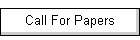

|
 |
  
IEEE Computer Society Annual Symposium on VLSI,
University of Massachusetts, Amherst, USA, August 19-21, 2012 |
|





Sponsored By:

|
HOTEL INFO

University of Massachusetts Hotel at the Campus Center
University of Massachusetts
Amherst, MA 01003
Phone: 877-822-2110
Website:
www.umasshotel.com
Rated as the best hotel in Amherst,
Massachusetts, and set at the heart of the picturesque campus of the
University of Massachusetts Amherst, the UMass Hotel and Conference
Center blends tranquility with the bustling energy of campus life.
The breathtaking views from your guestroom allow you to appreciate
the natural beauty of scenic New England.
HOW TO
MAKE RESERVATION:
Conference
attendees should contact the hotel directly by July 27, 2012
to secure their reservation. Use Group Code: "VLSIC"
for the negotiated rate. After July 27, 2012, rooms and
negotiated rates will not be guaranteed.
TRAVEL
INFORMATION
Air
travel:
Air travel through both Bradley
(Hartford) and Logan (Boston) International airports are
available as well as NYC Airports..
Bradley International Airport:
Bradley (Hartford/Springfield): 45 miles south of the UMass.
Logan International Airport Logan
(Boston): 90 miles east of the UMass.
-
There is public transportation from
Boston airport and New York city to UMass Amherst campus.
-
Visit
http://www.peterpanbus.com/ for details. Peter Pan drops
you directly on campus, just a few buildings away from the
campus hotel.
-
For travelers through New York City,
it is possible to fly into one of the NY airports, take a
shuttle bus to Port Authority bus terminus for about $15
http://www.nyairportservice.com/ and then take Peter Pan
bus into UMass campus.
-
For travelers through Boston Logan,
take silver line bus outside terminus to Boston South
Station transit center ($2) that runs every 10 to 15
minutes. Then take Peter Pan bus to Amherst campus.
-
http://us.megabus.com/ also brings travelers to Amherst
from New York City. They stop 4 miles away from campus.
-
For travelers through Hartford
airport, there are multiple airport shuttles and taxis.
Directions to Campus
Please note that if you are driving and chose to use GPS,
the Visitor Center address is:
300 Massachusetts Ave, Amherst, MA 01003.
If you are a first time visitor and traveling from the East
or West on I-90 (Mass Pike), we do not recommend
taking exit 8 off of the Mass Pike, rather follow the
directions to exit 4 listed below.
By Car
- From the North From I-91 South, take exit 25 in
Deerfield. At the end of the ramp, turn left and
follow road to the intersection. Turn right onto
Routes 5 & 10 South. Go 1 mile, then turn left onto
Route 116 South. Follow 8 miles to the UMass exit.
- From the East Via Route 2 West to exit 16
(Belchertown/Amherst). From Route 2 take
Route 202 South for about 15 miles to a blinking
yellow light at
Amherst Road. (You will see signs "to Rt 9 and Rt
116"). Turn right
and follow Amherst Road (becomes Pelham Road after
about 4 miles) for
7 miles to Amherst center. Follow signs to UMass.
From I-90 (Mass Pike), take exit 4 (West
Springfield). Follow I-91 North to Exit 19. From the
exit ramp, turn right onto Route 9. Travel
approximately 4.5 miles to Route 116 North (turn
left at traffic lights). UMass exit is 1 mile.
|
- From the South From I-91 North, take Exit 19 in
Northampton. From the exit ramp, turn right onto
Route 9. Travel approximately 4.5 miles to Route 116
North (turn left at traffic lights). UMass exit is 1
mile.
- From the West From Route 2 East, follow to
Greenfield/I-91 exit. Take I-91 South to exit 25 in
Deerfield. At the end of the ramp turn left and
follow the road to the intersection. Turn right onto
Routes 5 & 10 South. Go 1 mile, then turn left onto
Route 116 South. Follow for 8 miles to the UMass
exit.
From I-90 (Mass Pike), take exit 4 (West
Springfield). Follow I-91 North to Exit 19. From the
exit ramp, turn right onto Route 9. Travel
approximately 4.5 miles to Route 116 North (turn
left at traffic lights). UMass exit is 1 mile.
|
By Air
|
|
-
Exclusive Car Service Inc
(877) 695-4665 provides private car service to and
from Bradley, Logan, and New York airports.
- Bluebird Transportation
(413) 221-4512 provides airport shuttle and car
service from Bradley, Logan and J.F.K. airports.
- Michael's
Limousine & Transportation Service
(800) 533-8470 provides transportation services to
and from Bradley, Logan, and J.F.K. airports and
throughout the local area.
|
By Bus
By Train
-
Amtrak for schedules, or call (800) 872-7245
More details including
local transportation is available at the following URL:
http://www.umass.edu/visitorsctr/Directions_to_Campus/
This site is maintained by:
ISVLSI 2012 Web ChairTheo Theocharides (ttheocharides@ucy.ac.cy),
University of Cyprus.
|